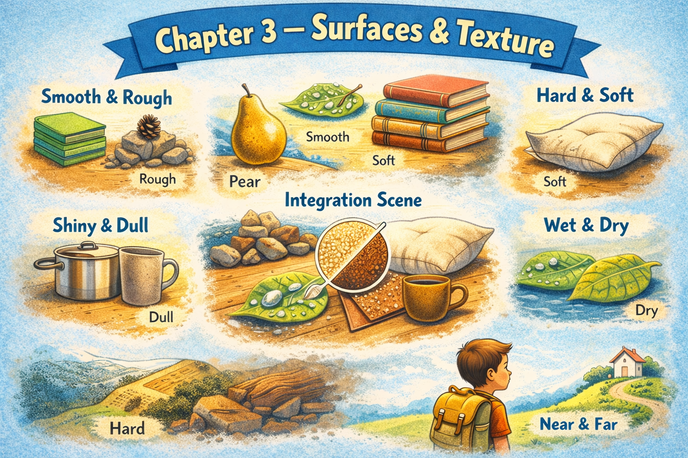

Chapter 3 — Surfaces & Texture

Micro Scene 1 — The Surface of the Desk
1️⃣ Scene Text
The surface of the desk feels smooth under my fingers.
When I slide my hand across it, I can sense a slight resistance.
There is a faint scratch near the front edge.
The wood has a matte finish rather than a glossy one.
Light spreads evenly across the surface without strong reflections.
In some areas, the texture feels slightly uneven.
Dust tends to settle near the corners where the surface meets the wall.
The desk feels solid and stable when I press down on it.
The material absorbs sound instead of amplifying it.
Although it looks flat, the texture reveals subtle imperfections.
The surface defines how objects rest and move on it.
2️⃣ Core Verb Pool
feel
slide
sense
spread
settle
meet
press
absorb
amplify
reveal
define
3️⃣ Structure Patterns
The surface of + noun
X feels + adjective
When X + verb, Y + verb
X spreads across Y
X meets Y
X absorbs / amplifies + noun
Although X + verb, Y + verb
4️⃣ Replace & Extend
Replace the material:
The surface feels smooth.
→ The surface feels rough.
→ The surface feels slightly sticky.
Replace the reaction:
The material absorbs sound.
→ The material reflects light.
→ The material retains heat.
Replace the imperfection:
There is a faint scratch.
→ There is a small dent.
→ There is a visible stain.
5️⃣ Spoken Mode
The desk feels smooth when I touch it.
There’s a small scratch near the edge.
It doesn’t reflect much light.
It feels solid when I press on it.
Up close, you can see small imperfections.
🔎 Structural Notes
• “The surface of…” focuses attention on tactile perception.
• “Although…” introduces contrast between appearance and reality.
• “absorb / reflect” describe physical interaction.
Micro Scene 2 — The Texture of the Keyboard and Trackpad
1️⃣ Scene Text
The keys of the MacBook Pro feel firm and slightly textured.
When I press them, they respond with a soft and controlled resistance.
Some keys are smoother than others due to frequent use.
The letters on certain keys appear slightly faded.
The trackpad has a smooth glass surface that allows precise movement.
My fingers glide across it without friction.
Unlike the keyboard, the trackpad reflects light more clearly.
The surface feels cool to the touch, especially in the morning.
There are no visible scratches, but tiny marks become noticeable under strong light.
The contrast between the keyboard and the trackpad creates a subtle variation in texture.
Each surface offers a different tactile experience.
2️⃣ Core Verb Pool
press
respond
fade
appear
glide
reflect
feel
notice
create
offer
3️⃣ Structure Patterns
The keys of + noun
X feels + adjective
When X + verb, Y + verb
X appears + adjective
X glides across Y
X reflects + noun
X becomes + adjective under + condition
The contrast between A and B
4️⃣ Replace & Extend
Replace the texture:
The keys feel firm.
→ The keys feel slightly loose.
→ The surface feels rough.
Replace the condition:
The letters appear faded.
→ The surface appears worn.
→ The finish appears polished.
Replace the sensation:
The surface feels cool to the touch.
→ The surface feels warm to the touch.
→ The surface feels slightly sticky.
5️⃣ Spoken Mode
The keys feel firm when I press them.
Some of them are smoother from frequent use.
The trackpad’s really smooth and easy to glide on.
It reflects more light than the keyboard.
Up close, you can see tiny marks under strong light.
🔎 Structural Notes
• “to the touch” signals tactile perception.
• “become + adjective under + condition” describes conditional appearance.
• “contrast between A and B” highlights difference in texture.
Micro Scene 3 — The Material of the Chair
1️⃣ Scene Text
The seat of the chair is covered with a dark fabric.
The material feels slightly rough but breathable.
When I press down on it, the cushion compresses gently and then returns to its original shape.
The armrests are made of hard plastic with a matte finish.
Their surface feels cooler and smoother than the fabric.
The metal frame beneath the seat provides structural support.
It has a solid, rigid texture that does not bend easily.
Over time, the fabric shows subtle signs of wear.
The edges near the seams feel slightly thicker than the center.
Different materials combine to create both comfort and stability.
The chair feels durable, even under constant use.
2️⃣ Core Verb Pool
cover
feel
press
compress
return
provide
bend
show
combine
create
support
3️⃣ Structure Patterns
X is covered with Y
When X + verb, Y + verb
X is made of Y
X provides + noun
X does not + verb easily
X shows signs of + noun
Different A combine to + verb
X feels + adjective
4️⃣ Replace & Extend
Replace the material:
The seat is covered with fabric.
→ The seat is covered with leather.
→ The surface is covered with plastic.
Replace the reaction:
The cushion compresses gently.
→ The cushion remains firm.
→ The cushion sinks quickly.
Replace the durability:
The chair feels durable.
→ The material feels fragile.
→ The structure feels unstable.
5️⃣ Spoken Mode
The seat’s covered with fabric.
It compresses a bit when I sit down.
The armrests are smooth plastic.
The frame’s solid and doesn’t bend.
It feels sturdy even after long use.
🔎 Structural Notes
• “is made of” identifies composition.
• “show signs of” indicates gradual change.
• “does not bend easily” expresses resistance.
Micro Scene 4 — Heat, Temperature, and Touch
1️⃣ Scene Text
The surface of the laptop becomes slightly warm after several hours of use.
Heat gathers near the bottom edge where the internal components are located.
When I place my hand on the metal casing, I can feel the retained warmth.
The keyboard remains cooler than the underside of the device.
In the morning, the desk feels colder to the touch.
As the room temperature rises, the materials gradually adjust.
The fabric of the chair traps a small amount of heat.
In contrast, the metal frame stays cool even after prolonged contact.
The difference in temperature affects how long I keep my hands in one place.
Warm surfaces create a sense of activity, while cooler surfaces feel inactive.
Touch reveals subtle thermal variations that are not visible to the eye.
2️⃣ Core Verb Pool
become
gather
locate
retain
remain
rise
adjust
trap
stay
affect
create
reveal
3️⃣ Structure Patterns
X becomes + adjective
Heat gathers near + noun
When X + verb, Y + verb
X remains + adjective
In contrast, X + verb
X affects + noun
X creates + noun
X reveals + noun
4️⃣ Replace & Extend
Replace the temperature:
The laptop becomes warm.
→ The laptop stays cool.
→ The device overheats quickly.
Replace the reaction:
The material traps heat.
→ The material releases heat.
→ The material absorbs moisture.
Replace the perception:
Touch reveals thermal variation.
→ Light reveals surface details.
→ Pressure reveals structural weakness.
5️⃣ Spoken Mode
The laptop gets warm after a while.
Heat builds up near the bottom.
The desk feels cold in the morning.
The chair traps a bit of heat.
You can feel small temperature differences if you pay attention.
🔎 Structural Notes
• “become + adjective” signals gradual change.
• “In contrast” introduces comparison.
• “retain / trap” describe physical containment.
Micro Scene 5 — Wear and Imperfection
1️⃣ Scene Text
Over time, the surfaces around me begin to show subtle signs of wear.
The edges of the desk have small dents that were not there before.
The finish on the laptop has faded slightly near the corners.
Tiny scratches appear on the metal frame under strong light.
The fabric of the chair becomes thinner in areas of frequent contact.
Some keys on the keyboard feel smoother due to constant use.
The drawer handle has developed a faint discoloration.
These imperfections do not affect functionality, but they reveal history.
Each mark represents repeated interaction.
Wear accumulates gradually rather than appearing all at once.
The surface tells a story of movement and pressure over time.
2️⃣ Core Verb Pool
show
develop
fade
appear
become
feel
affect
reveal
represent
accumulate
tell
3️⃣ Structure Patterns
X shows signs of + noun
X has developed + noun
X appears + condition
X becomes + adjective
X does not affect + noun
Each X represents + noun
X accumulates + adverb
4️⃣ Replace & Extend
Replace the imperfection:
The surface has small dents.
→ The surface has visible cracks.
→ The surface has minor stains.
Replace the effect:
The wear does not affect functionality.
→ The wear reduces performance.
→ The wear improves grip.
Replace the interpretation:
Each mark represents repeated interaction.
→ Each scratch reflects frequent movement.
→ Each stain suggests accidental contact.
5️⃣ Spoken Mode
You can see small dents along the edges.
The finish has faded a bit.
Some keys feel smoother from constant use.
The marks don’t change how it works.
They just show that it’s been used a lot.
🔎 Structural Notes
• “show signs of” expresses gradual change.
• “do not affect” separates appearance from function.
• “represent” moves from physical to interpretive meaning.
很好。
我们完成 Chapter 3。
Micro Scene 6 — Friction and Resistance
1️⃣ Scene Text
When I move the mouse across the pad, I can feel slight friction beneath my hand.
The surface resists movement just enough to maintain control.
If I slide the laptop too quickly, it shifts slightly before settling back into place.
The chair wheels roll smoothly on the floor but slow down when they meet resistance.
The drawer does not open effortlessly; it pushes back slightly at the midpoint.
Some cables create drag when I pull them across the desk.
The resistance is subtle, yet noticeable.
Friction prevents objects from slipping too easily.
Without it, surfaces would feel unstable.
Even smooth materials contain microscopic irregularities.
These small variations generate the resistance that stabilizes movement.
2️⃣ Core Verb Pool
move
feel
resist
maintain
slide
shift
settle
roll
meet
push back
create
prevent
stabilize
generate
3️⃣ Structure Patterns
When X + verb, Y + verb
X resists + noun
X shifts before + verb-ing
X meets + noun
Without X, Y would + verb
X prevents + noun from + verb-ing
X generates + noun
4️⃣ Replace & Extend
Replace the interaction:
The surface resists movement.
→ The surface allows smooth motion.
→ The surface blocks movement entirely.
Replace the condition:
Without friction, surfaces would feel unstable.
→ Without support, the monitor would tilt.
→ Without alignment, the setup would collapse.
Replace the effect:
The resistance stabilizes movement.
→ The pressure increases tension.
→ The motion reduces accuracy.
5️⃣ Spoken Mode
There’s a bit of friction when I move the mouse.
The drawer pushes back slightly in the middle.
The wheels roll smoothly unless they hit resistance.
Without friction, everything would slide around.
That small resistance actually keeps things stable.
🔎 Structural Notes
• “prevent A from + verb-ing” expresses constraint.
• “Without X, Y would…” introduces hypothetical consequence.
• “resist + noun” describes physical opposition.
🔸 Integration Scene — Texture as Structure
Every surface around me carries a distinct texture.
The desk feels smooth yet slightly uneven.
The keyboard responds with firm resistance.
The trackpad offers a polished and controlled glide.
The chair combines fabric and metal to balance comfort and strength.
Heat gathers near certain areas, while others remain cool.
Over time, small imperfections begin to appear.
Edges develop dents, and finishes fade gradually.
Friction prevents objects from sliding out of place.
Resistance stabilizes movement across different surfaces.
Even invisible layers influence how materials interact.
The texture of each object defines how I use it.
Touch reveals changes that sight cannot detect.
Wear tells the story of repeated contact.
Every mark represents accumulated pressure.
Surface is not only appearance — it is interaction.
Integration Verb Focus
feel
respond
resist
prevent
develop
reveal
define
interact
stabilize
Reflection
Which surfaces in your workspace feel most comfortable?
Which ones show the most wear?
What does that say about your daily interaction?